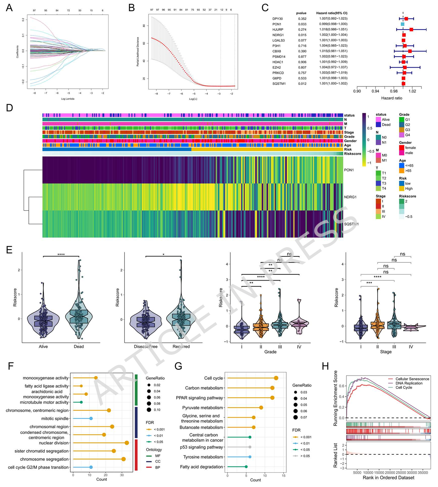
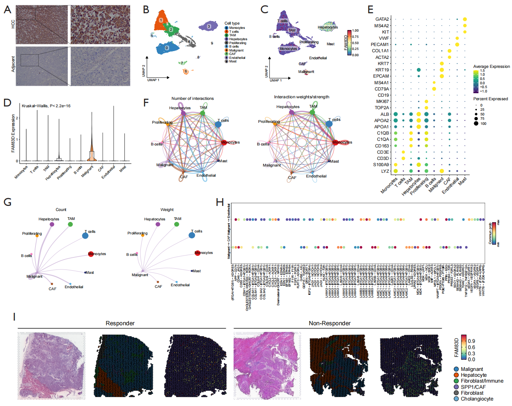
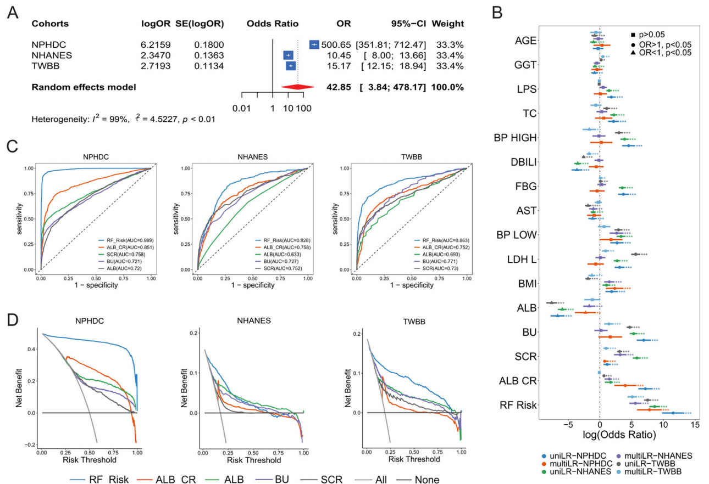
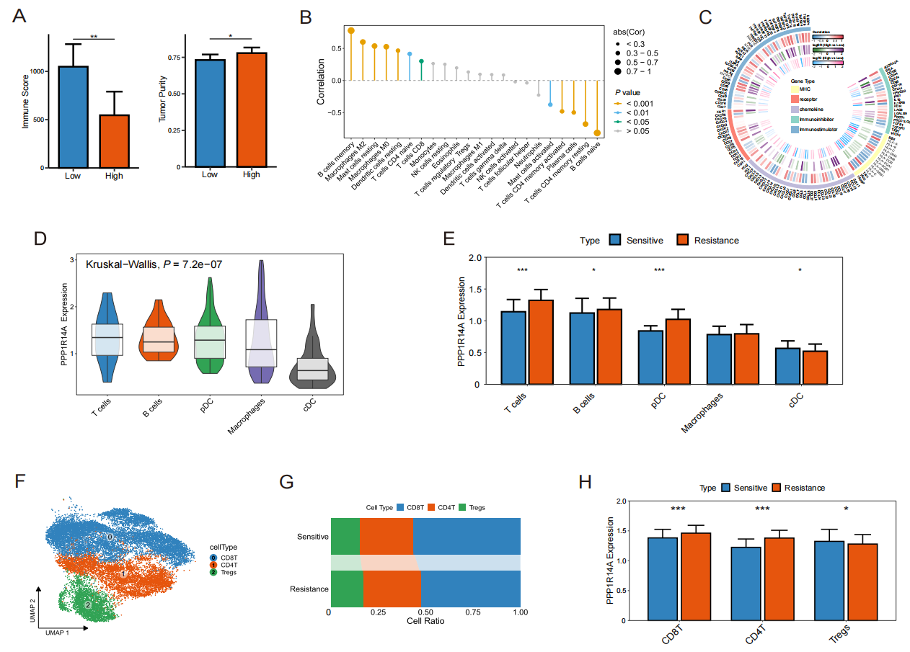
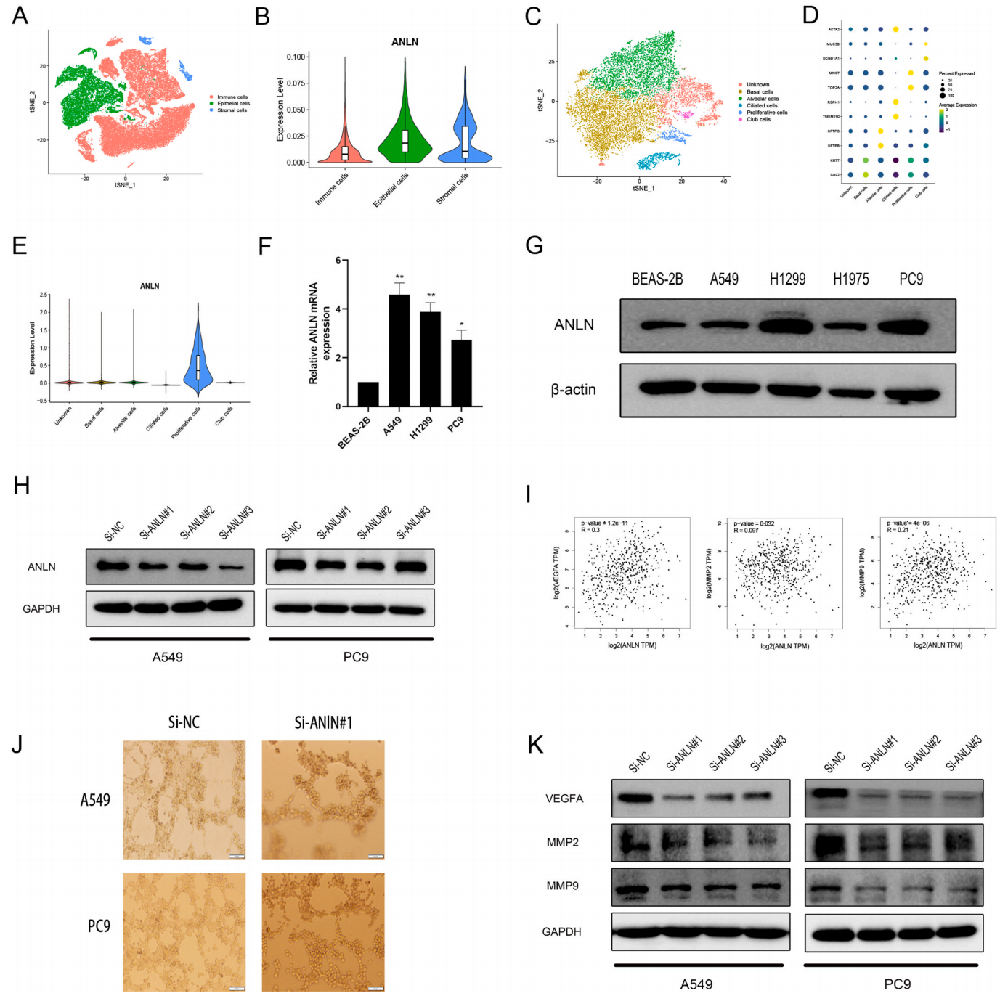
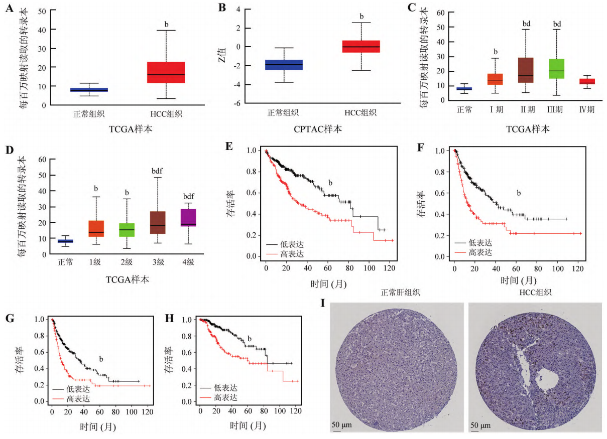
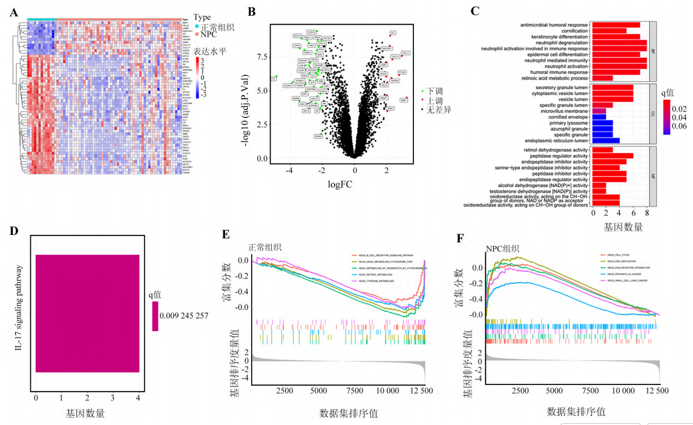
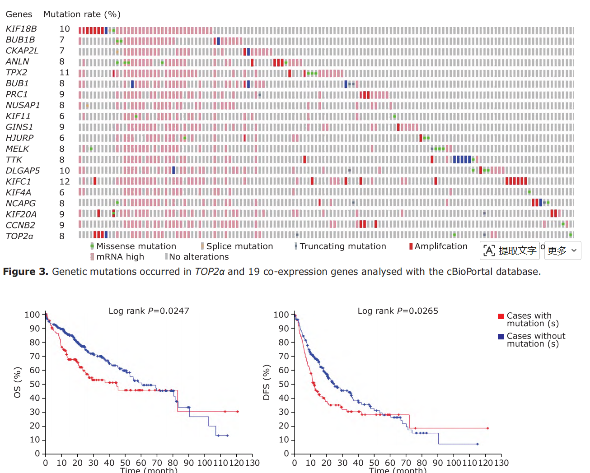
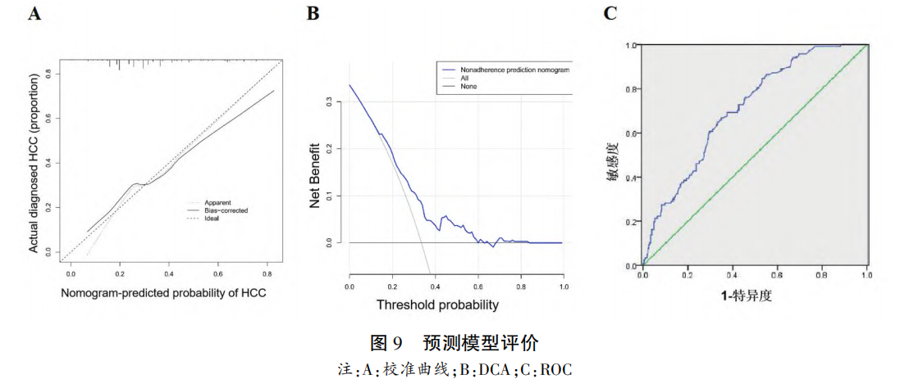

Integrated bioinformatic evaluation unveils a cellular senescence gene signature as a poor prognostic factor in hepatocellular carcinoma
Shaoyang Lu
†,
Junjie Ma†, Xiaodan Wang, Lei Zhang, Jin Lu*, Junjie Hu*
Clinical and Experimental Medicine,
2026, Accepted.
DOI

Identification of the key gene for hepatocellular carcinoma based on bioinformatics and machine learning and experimental verification
Jin Lu
†,
Junjie Ma†, Can Yu, Shaoyang Lu, Xueying Zhao, Lei Zhang*
Translational Cancer Research,
2025, 14 (11): 7995-8011.
DOI
PubMed
Abstract
PDF
EndNote
Citations: -

Integrated machine learning and deep learning for predicting diabetic nephropathy model construction, validation, and interpretability
Junjie Ma, Shaoguang An, Mohan Cao, Lei Zhang, Jin Lu*
Endocrine,
2024, 85 (2): 615-625.
DOI
PubMed
Abstract
PDF
EndNote
Citations: -

PPP1R14A is associated with immunotherapy resistance in head and neck squamous cell carcinoma identified by single-cell and bulk RNA-sequencing
Junjie Ma†, Lei Zhang
†, Jin Lu, Haoxuan Zhang*
Chinese Medical Sciences Journal,
2024, 39 (2): 111-121.
DOI
PubMed
Abstract
PDF
EndNote
Citations: -

Vasculogenic mimicry-associated novel gene signature predicted prognosis and response to immunotherapy in lung adenocarcinoma
Lei Zhang
†, Jiatao Wu
†, Weiwei Yin
†, Junjie Hu, Lingli Liao,
Junjie Ma, Ziwei Xu, Shiwu Wu*
Pathology Research and Practice,
2024, 253: 155048.
DOI
PubMed
Abstract
PDF
EndNote
Citations: -

Analysis of correlation between high expression of nucleoporin 85 (NUP85) and immune cell infiltration in hepatocellular carcinoma
Xinyu Liu
†, Zebang Ding
†, Huan Wu,
Junjie Ma, Jin Lu*
Chinese journal of cellular and molecular immunology,
2024, 340 (6): 508-519.
DOI
PubMed
Abstract
PDF
EndNote
Citations: -

Screen of key characteristic genes of nasopharyngeal carcinoma (NPC) base on machine learning and analysis of their correlation with immune cells
Haoxuan Zhang,
Junjie Ma, Shaoguang An, Lixue Xu, Jin Lu, Chengyi Jiang*
Chinese journal of cellular and molecular immunology,
2023, 39 (11): 988-995.
DOI
PubMed
Abstract
PDF
EndNote
Citations: -

Topoisomerase Ⅱα Gene as a Marker for Prognostic Prediction of Hepatocellular Carcinoma: A Bioinformatics Analysis
Jin Lu, Shaoguang An,
Junjie Ma, Yue Yang, Lei Zhang, Peng Yu, Heng Tao, Yunfan Chen, Haoxuan Zhang*
Chinese medical sciences journal,
2022, 37 (4): 331-339.
DOI
PubMed
Abstract
PDF
EndNote
Citations: -

hsa-miR-106b-5p调控ESR1表达对肝细胞癌患者生存预后的意义
陆进, 安韶光,
马俊杰, 俞鹏, 陶恒, 陈云帆, 张浩轩
*
牡丹江医学院学报,
2022, 43 (5): 27-34.
DOI
CNKI
Abstract
PDF
EndNote
Approved Patents & Software Copyrights
A rehabilitation device for limb flap transplantation
Shaoguang An, Junjie Ma, Jingjing Cai, Yu Deng, Jin Lu, Lei Zhang
2024-12-10, Utility Model Patent (ZL202420105433.2)
URL
Abstract
Diabetes complicated with nephropathy risk prediction platform
Junjie Ma, Shaoguang An, Jingjing Cai, Zijun Lu, Jin Lu, Lei Zhang
2024-05-28, Software Copyright (2024SR0725076)
URL
Code
Approved Funding
Construction, evaluation, and validation of a diabetic nephropathy risk prediction model based on machine learning
2023-10-10 to 2025-11-03, Participant, CNY 10,000
National Innovation and Entrepreneurship Training Program for College Students (202310367071)
URL
Achievements
Screening and verification of prognosis-related genes for head and neck squamous cell carcinoma based on bioinformatics
2022-9-14 to 2024-11-04, Host, CNY 10,000
National Innovation and Entrepreneurship Training Program for College Students (202210367002)
URL
Achievements
Construction and validation of key gene screening and risk prediction model for hepatocellular carcinoma based on bioinformatics and artificial intelligence techniques
2022-9-14 to 2024-11-04, Participant, CNY 10,000
National Innovation and Entrepreneurship Training Program for College Students (202210367042)
URL
Achievements
Note: †Co-first author, *Corresponding author.Citation counts are provided by crossref